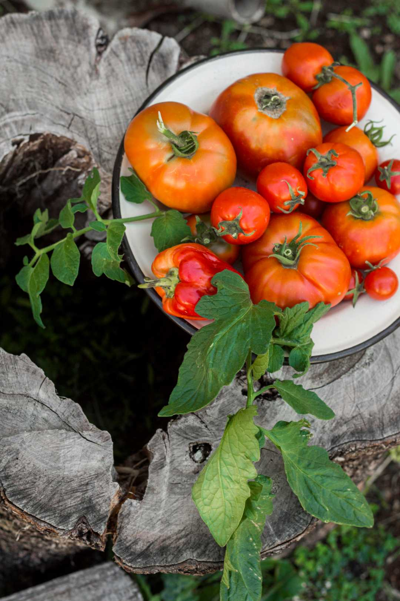

Tomate (Solanum lycopersicum)
Imagem

Sazonalidade
- Sementeira: normalmente na primavera (em tabuleiros ou estufa).
- Transplante: após risco de geadas.
- Colheita: final da primavera até ao verão, dependendo da região e variedade.
Benefícios para a saúde (resumo)
- Fonte de vitamina C e vitamina A (sobretudo na forma de beta-caroteno).
- Contém licopeno, um antioxidante associado à proteção celular.
- Baixo teor calórico, elevado teor de água.
Propriedades medicinais tradicionais
Em contexto tradicional, o tomate é visto como um alimento refrescante e aliado em dietas ricas em vegetais. Esta informação é geral e não substitui aconselhamento médico.
Sugestões de confeção
- Saladas frescas com tomate, cebola, azeite e ervas aromáticas.
- Molho de tomate caseiro para massas, pizzas ou estufados.
- Tomate assado no forno com alho, azeite e ervas.
Receitas exemplo
Molho de tomate simples
- Refogar cebola e alho em azeite.
- Adicionar tomate maduro picado ou triturado.
- Deixar apurar 15–20 minutos, temperar com sal, pimenta e manjericão.
Salada de tomate com manjericão
- Cortar tomates em rodelas ou cubos.
- Juntar folhas de manjericão fresco.
- Temperar com azeite, sal, pimenta e umas gotas de vinagre ou limão.